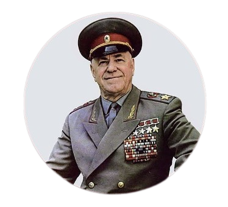
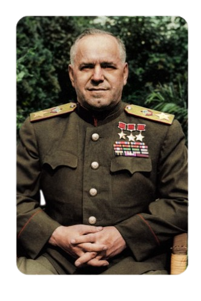

Gueorgui Konstantínovitch Júkov
foi um destacado militar e político russo, e o oficial mais condecorado da história da União
Soviética. Primeiro sargento do Exército Imperial Russo na Primeira Guerra Mundial, ao longo da
Guerra Civil Russa tornou-se oficial do Exército Vermelho e membro do Partido Comunista. No período
entreguerras ele cresceu firmemente nos quadros militares, e comandou as forças soviéticas na
batalha final de Halhin-Golie. Por seu papel na vitória contra o Japão, Josef Stalin o nomeou Chefe
do Estado-Maior General, já durante a Segunda Guerra Mundial.
As derrotas do verão de 1941, durante a invasão da URSS pela Alemanha Nazista, levaram Stalin a
envia-lo às frentes mais sensíveis da guerra, na condição de representante da Stavka. Júkov assumiu
então um papel-chave na Frente da Europa Oriental, coordenando as tropas de seu país em várias
grandes operações militares, primeiro na defesa e em seguida na contra-ofensiva soviéticas. Em
particular, ele desempenhou um papel importante no cerco a Leningrado, foi responsável pelo sucesso
soviético na batalha de Moscou, preparou a contra-ofensiva em Stalingrado, coordenou a parte norte
da batalha de Kursk, foi co-responsável pela recuperação da Ucrânia e controlou a metade sul da
Operação Bagration. Nomeado comandante da principal frente soviética na guerra, Júkov liderou a ação
decisiva da ofensiva no Vístula-Oder, e na sequência comandou as tropas soviéticas na conquista de
Berlim. Diante dele, em 8 de maio de 1945 o Alto comando das Forças Armadas Alemãs assinou o
instrumento de rendição de seu país, pondo fim à guerra na Europa.
Feito marechal da União Soviética em 1943 e gozando de imenso prestígio em seu país, Stalin,
desconfiando de sua popularidade, demitiu-o de seus postos em 1946 e ostracizou-o. A morte de Stalin
em 1953 permitiu a Júkov retornar à cena política, e ele ajudou a parar a tomada de poder de
Lavrenti Beria. Ele tornou-se então vice-ministro (1953-1955) e ministro da Defesa (1955-1957), e
membro do Politburo (1957), apoiando Nikita Khrushchov durante a desestalinização. Este, contudo,
afastou-o definitivamente de seus cargos em 1957. Inconformado com o papel a que fora relegado na
história da Segunda Guerra Mundial difundida pelo governo soviético, a partir de 1963 Júkov passou a
escrever suas memórias. Repreendido, ele viu novamente sua sorte mudar com a ascensão de Leonid
Brejnev. Suas memórias, publicadas em abril de 1969, tornaram-se um sucesso imediato e permanecem "o
mais influente relato pessoal da Grande Guerra Patriótica". Pai de quatro filhas e casado duas
vezes, Júkov faleceu poucos anos depois. Seu funeral com honras militares foi dirigido pessoalmente
por Brejnev, e suas cinzas depositadas na Necrópole da Muralha do Kremlin.
Por vezes brutal na liderança de suas tropas, e por ter contribuído decisivamente para defender o
regime soviético durante a guerra, G. K. Júkov é por vezes alcunhado o "General de Stalin". Contudo,
ainda em vida ele recebeu as mais altas honrarias da União Soviética e dos outros países Aliados,
dentre as quais quatro medalhas de Herói da União Soviética, a insígnia de Chefe-Comandante da
Legião do Mérito, a Grã-Cruz da Legião de Honra e a Grã-Cruz da Ordem do Banho. Além disso, seu
papel na Segunda Guerra Mundial tem levado historiadores a descrevê-lo como o principal responsável
na derrota da Alemanha nazista, e por vezes como "o homem que derrotou Hitler".

Nome completo: Georgi Zhukov
Nascimento: 1 de dezembro de 1896
Morte: 18 de junho de 1974
Anos de serviço: 1915–1957
Patente:Marechal da União Soviética
Conflitos: As duas grandes guerras e a guerra civil russa
